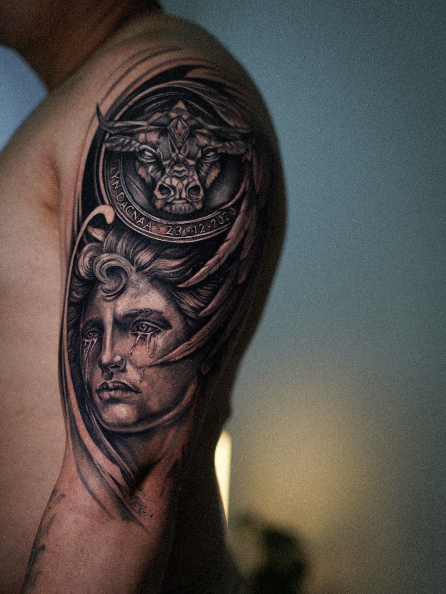
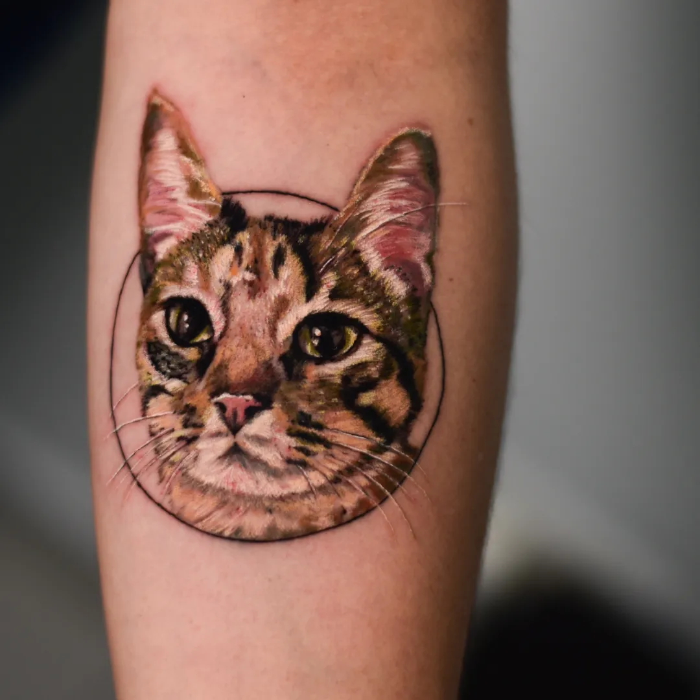

Tatuador y Diseñador gráfico
Camilo
Camilo
Castillo
Tatuajes únicos como tu historia

Tatuajes únicos como tu historia
Portafolio
Cada pieza nace de una idea compartida. Líneas, sombras y detalles se unen en diseños pensados para el cuerpo, la historia y el carácter de quien los lleva.

.jpg)


Agenda tu cita
Cuéntame tu idea, el tamaño aproximado y la zona del cuerpo. Con esa información revisaré la propuesta y te compartiré disponibilidad y presupuesto.
Escribir por WhatsAppCamilo Castillo
Soy tatuador y diseñador gráfico. Trabajo cada propuesta desde la conversación: una idea, un momento y una pieza que puedas llevar con sentido.
Me atraen las líneas limpias, el detalle y el contraste. Cada diseño se construye de forma personalizada, cuidando su composición y cómo dialoga con el cuerpo.
Después de tu sesión
Una buena cicatrización protege el resultado y ayuda a que la pieza conserve definición. Estas recomendaciones te acompañan durante las primeras semanas.
Si algo no evoluciona como esperas, escríbeme antes de usar un producto nuevo.
Mantén el vendaje el tiempo indicado y lávate las manos antes de tocar la zona.
Lava con agua tibia y jabón neutro. Seca con pequeños toques, sin frotar.
Aplica una capa fina de la crema recomendada para que la piel pueda respirar.
Evita el sol, las piscinas y rascar la piel mientras cicatriza.